Current OA rate
63%
Universities NZ 2025 Target
70%
Last Updated
07 Feb 2025
Total OA rate over time
Access type over time
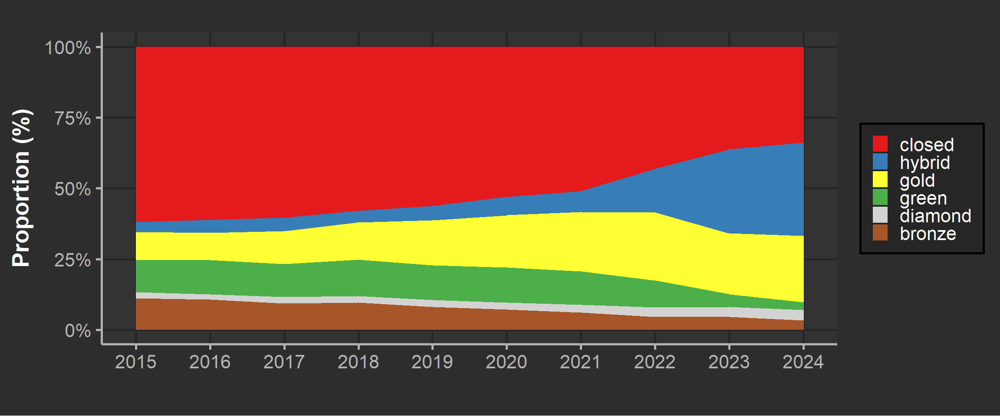
OA rate by institution ( 2024 )
Current OA rate
64%
OA target
-
Last Updated
07 Feb 2025
Total OA rate over time
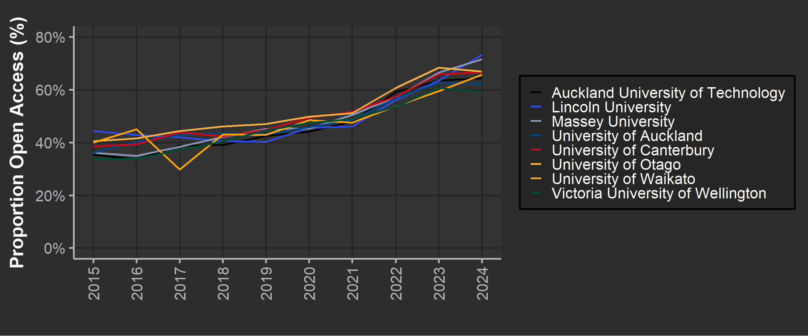
Access type over time
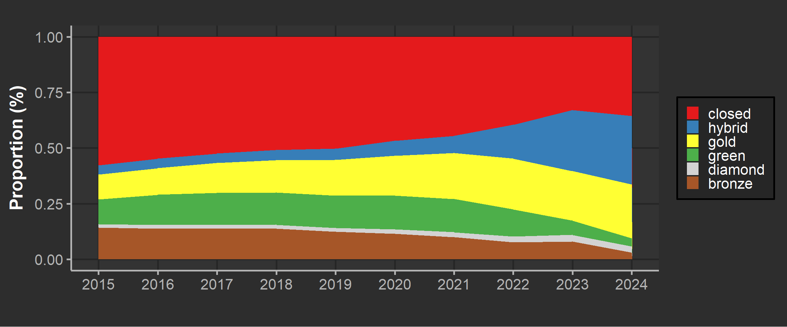
OA rate by institution ( 2024 )
Current OA rate (NZ)
63%
Current OA rate (AU)
64%
Last Updated
07 Feb 2025
NZ vs AU OA rate over time
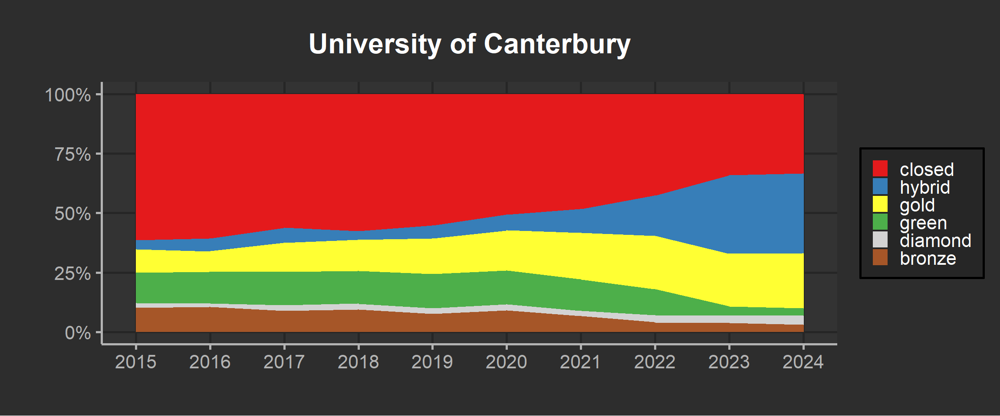
Institutional trend over time (NZ)
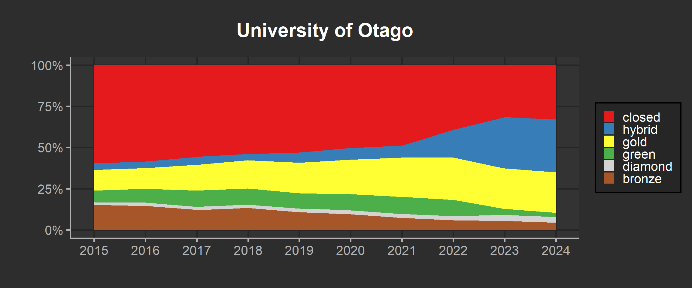
Institutional trend over time (AU)
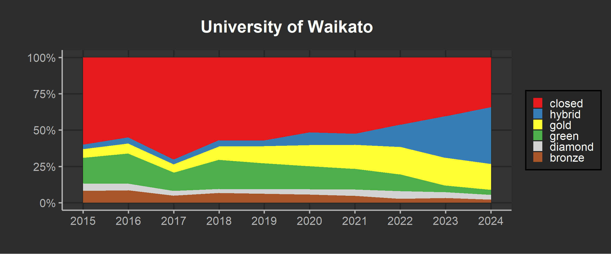
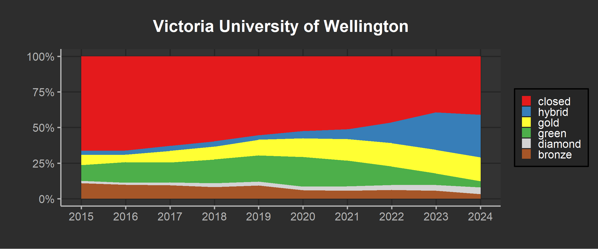

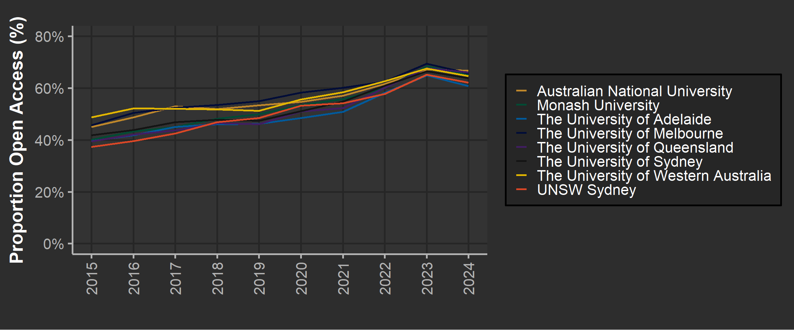
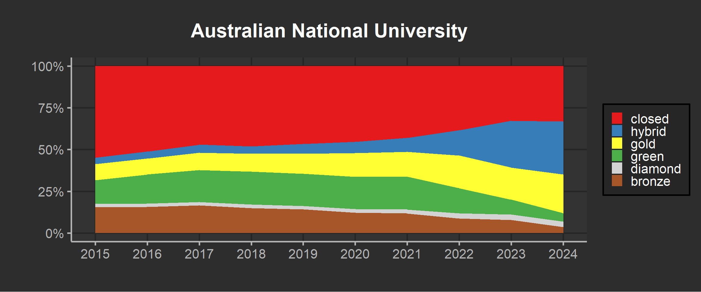
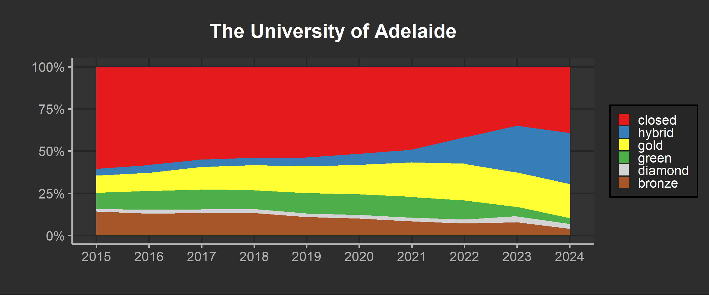
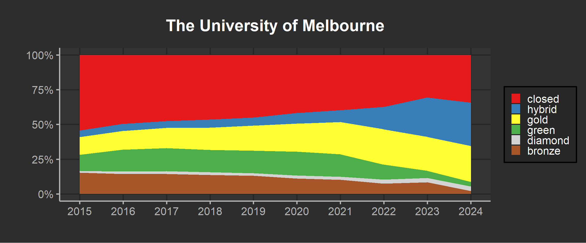
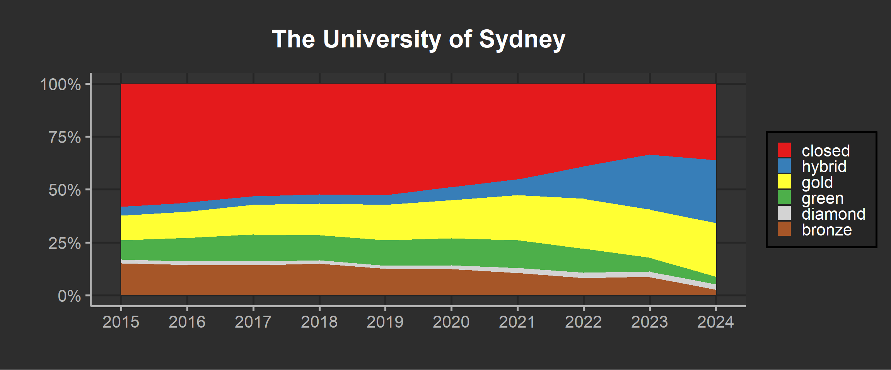
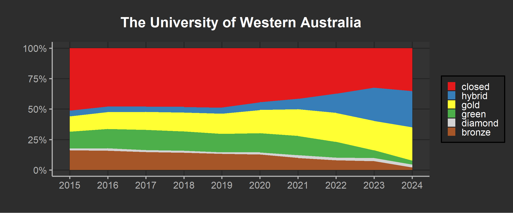
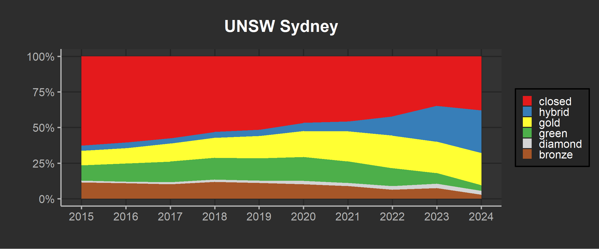
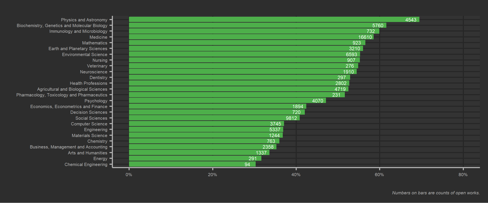
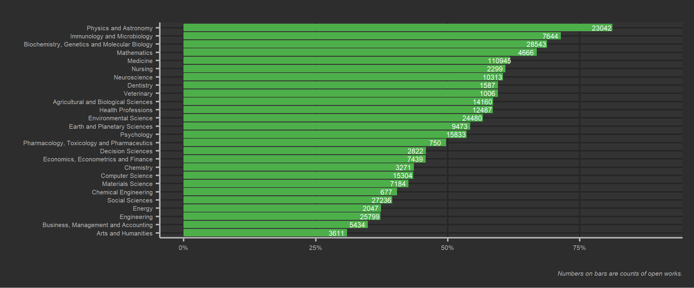